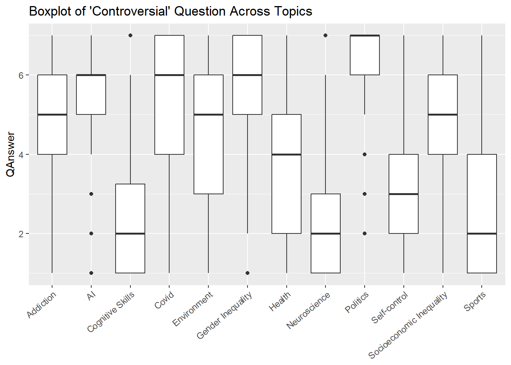
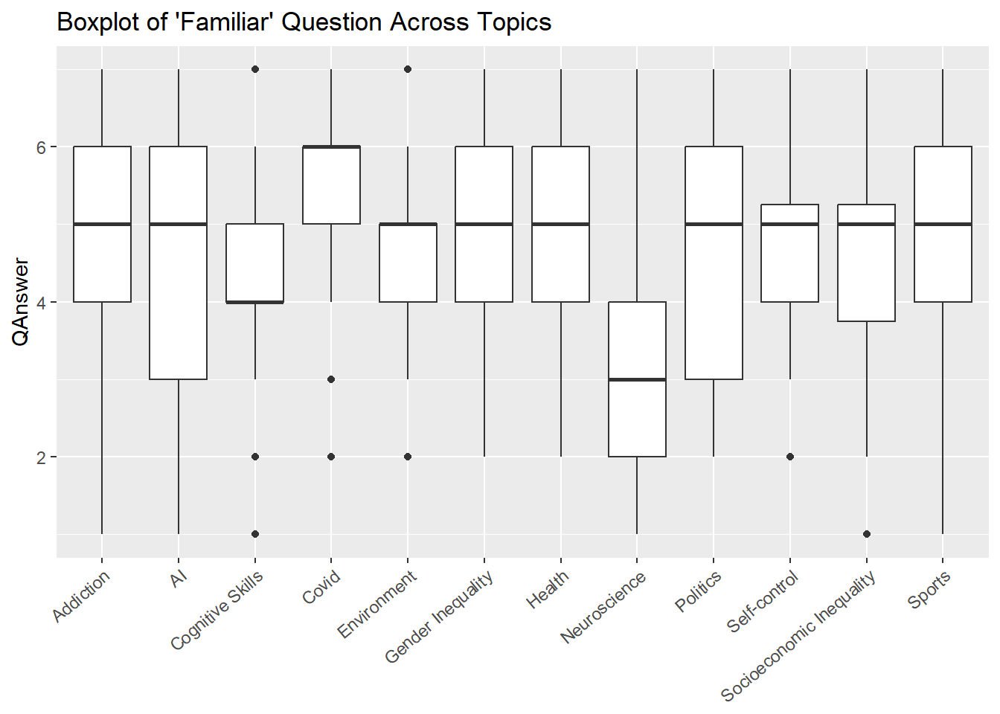
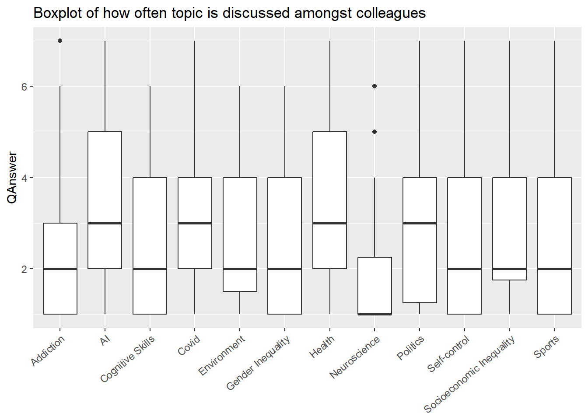
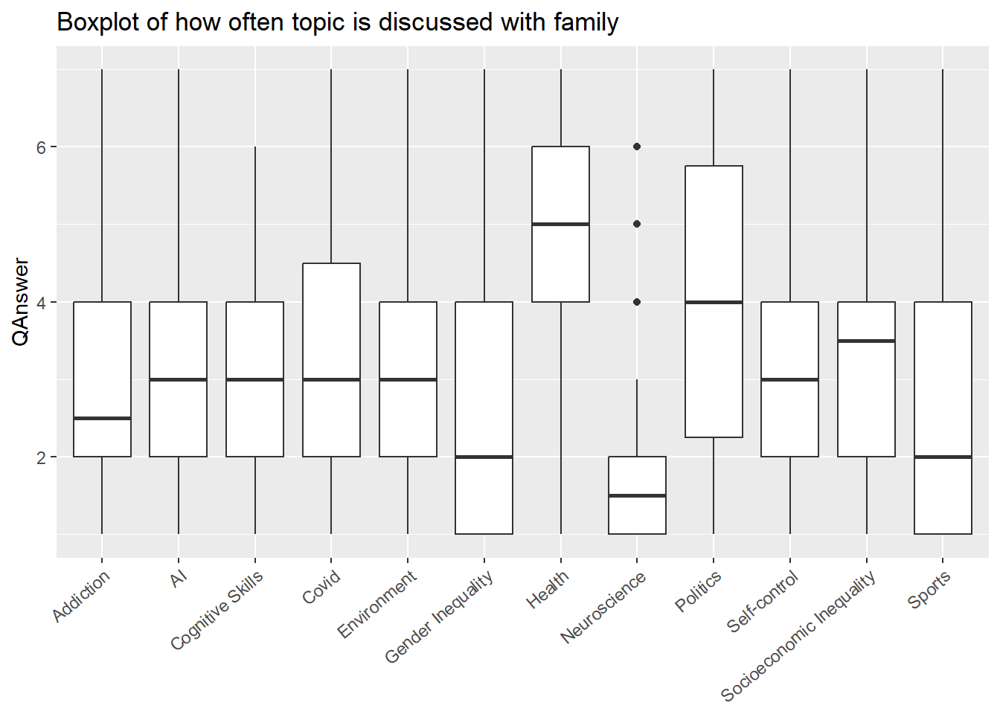
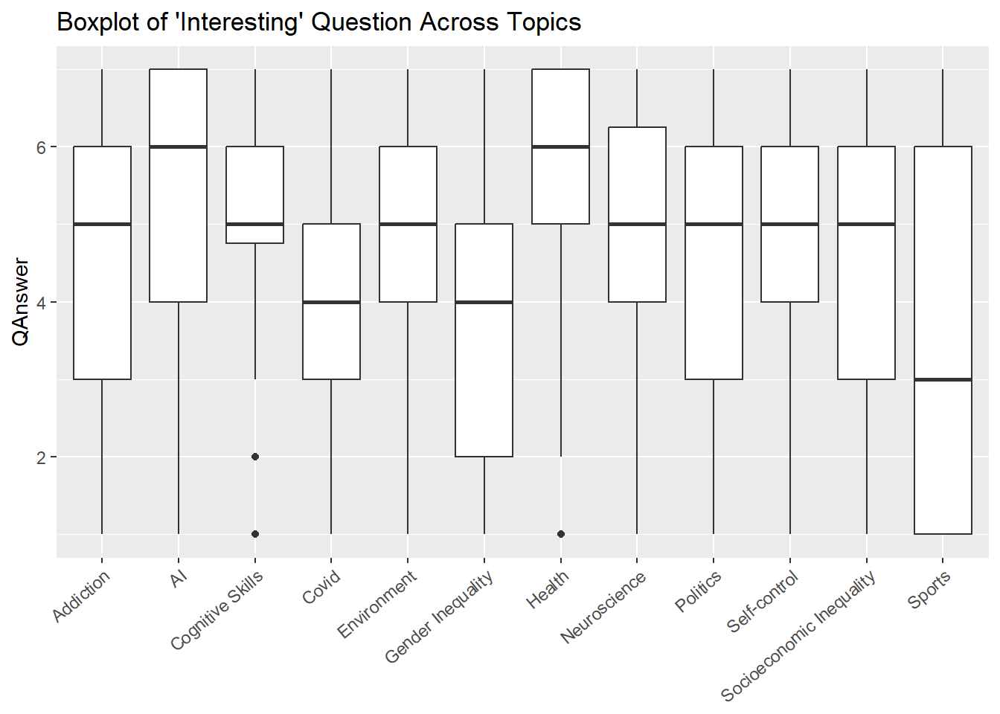
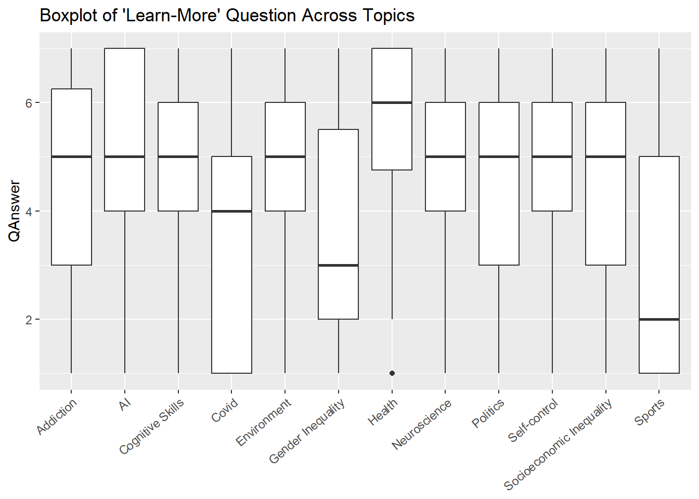
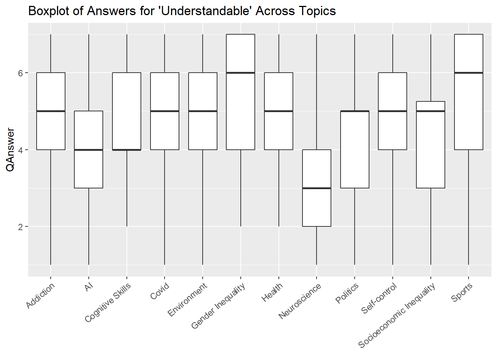

# A tibble: 6 × 3
# Groups: Topic [1]
Topic Question mean_score
<chr> <chr> <dbl>
1 AI controversial 5.25
2 AI familiar 4.51
3 AI heard-of-last-week 0.913
4 AI how-often-talk-colleagues 3.28
5 AI how-often-talk-family 3.04
6 AI important 5.28 Data Report 2
Dataset
Source: We use data from a online pilot experiment run by Marc Kaufmann. In that study, participants where asked their opinions about several topics (such as “Self-Control” or “Neuroscience”). Specifically, they were asked how controversial, how familiar, etc they thought the topic was; as well as how often they talk with colleagues or family about the topic; and finally whether they heard of the topic last week. All questions except for hearing about the topic last week were answered by choosing a number from 1 to 7 (1 being the least familar/controversial/etc, 7 being the most familiar/controversial/etc). The question on hearing about the topic last week was answered with “yes” or “no”.
Original Data Documentation:
- pid: the unique participant ID; a total of 85 unique participants. It has the “numeric” class.
- tpc: the topic about which the participant was asked. Can be of 12 types: 1.Self-control, 2.Neuroscience, 3. AI, 4. Cognitive Skills, 5. Covid, 6. Environment, 7.Socioeconomic inequality, 8.Politics, 9.Gender inequality, 10.Sports, 11.Addiction, 12.Health. It has the “character” class.
- qn: the question the person was asked. Can be of 9 types: 1.controversial, 2.familiar, 3.heard-of-last-week, 4.how-often-talk-colleagues, 5.how-often-talk-family, 6.important, 7.interesting, 8.learn-more, 9.understandable. It has the “character” class.
- Must be read as in the following example: How “controversial” - or familiar, or how much they heard about, etc. - the given topic is? How often does the family talk about the given topic?
- ans: the answer given by the person. The answer generally ranges from 1(least familiar/controversial etc) to 7 (the most familiar/controversial etc). The only exception is the question on hearing about the topic last week, which was answered with “yes” or “no”. It has the “character” class.
Cleaning
Documentation of cleaned data:
ID: the unique participant ID; a total of 85 unique participants. It has the “numeric” class.
Topic: the topic about which the participant was asked. Can be of 12 types: 1.Self-control, 2.Neuroscience, 3. AI, 4. Cognitive Skills, 5. Covid, 6. Environment, 7.Socioeconomic inequality, 8.Politics, 9.Gender inequality, 10.Sports, 11.Addiction, 12.Health. It has the “character” class.
Question: the question the person was asked. Can be of 9 types: 1.controversial, 2.familiar, 3.heard-of-last-week, 4.how-often-talk-colleagues, 5.how-often-talk-family, 6.important, 7.interesting, 8.learn-more, 9.understandable. It has the “character” class.
QAnswer: The answer to the question. The answer generally ranges from 1(least familiar/controversial etc) to 7 (the most familiar/controversial etc). The exception being the question on hearing about the topic last week, ranging from 0 (did not hear) to 1 did hear). It has the “integer” class.
Exploration
Shown above, you can find a table that includes the topic, with the best and worst scores for every question. Note that I also included the points for easier understanding. Next, we delve into the data looking at the best and worst scores for every question.
# A tibble: 9 × 5
Question Best_scores Best_scores_points Worst_scores
<chr> <chr> <dbl> <chr>
1 controversial Politics 6.30 Neuroscience
2 familiar Covid 5.48 Neuroscience
3 heard-of-last-week AI 0.913 Neuroscience
4 how-often-talk-colleagues Health 3.69 Neuroscience
5 how-often-talk-family Health 4.53 Neuroscience
6 important Health 6.48 Sports
7 interesting Health 5.39 Sports
8 learn-more Health 5.39 Sports
9 understandable Gender Inequality 5.36 Neuroscience
Worst_scores_points
<dbl>
1 2.41
2 3.40
3 0.294
4 1.87
5 1.96
6 3.09
7 3.4
8 3.2
9 3.06 Takeaways from this table:
The respondents saw politics as the most controversial topic, with a big score (6.3 points). This is in line with the expectation that politics is a space with many divergences.
Health is both the subject that the respondents talk most about with family and colleagues, and the one which is seen as interesting by most people. There is almost unanimity in declaring health as “most” important (score of 6.48 out of 7).
The popularity of AI is reflected in the fact that 91% of respondents have heard about the topic within a week.
Neuroscience is the subject that is, on average, the least understood, controversial, or talked about. Only 29% of respondents have heard about it within a week.
Let’s address this further. The table attached below indicates the respondents, on average, do not discuss the mentioned topics with their colleagues or even with their families. On the other hand, respondents resonated with the “important” topic questions the most and attributed better scores on average. The responses vary the most for the question regarding the most controversial topic (sd of 2.07) and the least for the familiarity question.
# A tibble: 9 × 6
Question `Mean Score` `Standard Deviation` `1st Quartile`
<chr> <dbl> <dbl> <dbl>
1 controversial 4.25 2.07 2
2 familiar 4.71 1.52 4
3 heard-of-last-week 0.678 0.468 0
4 how-often-talk-colleagues 2.76 1.72 1
5 how-often-talk-family 3.15 1.73 2
6 important 5.52 1.71 5
7 interesting 4.68 1.84 4
8 learn-more 4.49 1.98 3
9 understandable 4.63 1.57 4
`Median Score` `3rd Quartile`
<int> <dbl>
1 4 6
2 5 6
3 1 1
4 2 4
5 3 4
6 6 7
7 5 6
8 5 6
9 5 6Visualizing the data for “Controversial”, there seems to be the most consensus about AI and Politics that they are controversial topics. Most variation can be found for COVID, environment, health and sports. 50% of respondents believe neuroscience and sports are uncontroversial or barely controversial topics.

Visualizing the “Familiar” data, there is overall agreement that 50% of respondents believe themselves to be familiar or very familiar with the topics (beginning from 5 out of 7). The only exceptions are cognitive skills and neuroscience, for which respondents believe they are less familiar, and COVID, with which 50% of respondents were very familiar (6 out of 7). This might reflect that respondents are more comfortable with topics that require less technical skills (such as neuroscience). Additionally, the data indicates the COVID pandemic has been an important people of people’s lives in the last years.

Visualizing the data regarding how often topics are discussed amongst colleagues, it seems there is overall less discussions with their peers. This could be due to the attempt of the respondents to separate their private life from their work life. When they do discuss, topics such as AI, Health or Politics are important, which are uncoincidentally easy discussions for small talk; Neuroscience is, of course, not, which is also reflected in the very low scores.

Visualizing the data regarding discussions within family, it seems that on average there are more discussions than with the work colleagues, however in other respects they are quite similar (for example, the topics that can constitute small talk are still most popular, whereas neuroscience is not).

The following two boxplots, regarding what is perceived as interesting by respondents and what would they like to learn more about, indicate a big part of respondents are curious about all topics, with the greatest variance for the sports topic. 50% would not want to learn more about sports, whereas there is big variability in people’s desire to learn about COVID, perhaps indicating that they need a break from the stressful times of the pandemic.


Lastly, neuroscience remains the least understood subject, whereas 50% of people believe they have very good knowledge of gender inequality and sports. This might be because these might appear as very non-technical subjects that are easy to grasp without further delving into research literature.

A detailed table of the best and worst values of every topic has been attached below. These should be kept in mind by future participants in the study.
| Topic | Reason Direction | Reason | Importance |
|---|---|---|---|
| AI | for | The topic ‘AI’ scored the maximum average points of 5.33 for the question interesting. | 5 |
| AI | against | The topic ‘AI’ scored the minimum average points of 0.91 for the question heard-of-last-week. | 5 |
| AI | against | More than 60% of people thought the topic ‘AI’ is controversial. | 3 |
| Addiction | for | The topic ‘Addiction’ scored the maximum average points of 6.21 for the question important. | 5 |
| Addiction | for | More than 60% of people thought the topic ‘Addiction’ is important. | 3 |
| Addiction | against | The topic ‘Addiction’ scored the minimum average points of 0.6 for the question heard-of-last-week. | 5 |
| Addiction | against | More than 60% of people thought the topic ‘Addiction’ is controversial. | 3 |
| Cognitive Skills | for | The topic ‘Cognitive Skills’ scored the maximum average points of 5.76 for the question important. | 5 |
| Cognitive Skills | for | More than 60% of people thought the topic ‘Cognitive Skills’ is important. | 3 |
| Cognitive Skills | against | The topic ‘Cognitive Skills’ scored the minimum average points of 0.44 for the question heard-of-last-week. | 5 |
| Covid | for | The topic ‘Covid’ scored the maximum average points of 5.48 for the question familiar. | 5 |
| Covid | against | The topic ‘Covid’ scored the minimum average points of 0.86 for the question heard-of-last-week. | 5 |
| Covid | against | More than 60% of people thought the topic ‘Covid’ is controversial. | 3 |
| Environment | for | The topic ‘Environment’ scored the maximum average points of 5.88 for the question important. | 5 |
| Environment | for | More than 60% of people thought the topic ‘Environment’ is important. | 3 |
| Environment | against | The topic ‘Environment’ scored the minimum average points of 0.84 for the question heard-of-last-week. | 5 |
| Environment | against | More than 60% of people thought the topic ‘Environment’ is controversial. | 3 |
| Gender Inequality | for | The topic ‘Gender Inequality’ scored the maximum average points of 5.36 for the question understandable. | 5 |
| Gender Inequality | against | The topic ‘Gender Inequality’ scored the minimum average points of 0.53 for the question heard-of-last-week. | 5 |
| Gender Inequality | against | More than 60% of people thought the topic ‘Gender Inequality’ is controversial. | 3 |
| Health | for | The topic ‘Health’ scored the maximum average points of 6.48 for the question important. | 5 |
| Health | for | More than 60% of people thought the topic ‘Health’ is important. | 3 |
| Health | against | The topic ‘Health’ scored the minimum average points of 0.89 for the question heard-of-last-week. | 5 |
| Neuroscience | for | The topic ‘Neuroscience’ scored the maximum average points of 5.68 for the question important. | 5 |
| Neuroscience | for | More than 60% of people thought the topic ‘Neuroscience’ is important. | 3 |
| Neuroscience | against | The topic ‘Neuroscience’ scored the minimum average points of 0.29 for the question heard-of-last-week. | 5 |
| Politics | for | The topic ‘Politics’ scored the maximum average points of 5.59 for the question important. | 5 |
| Politics | for | More than 60% of people thought the topic ‘Politics’ is important. | 3 |
| Politics | against | The topic ‘Politics’ scored the minimum average points of 0.91 for the question heard-of-last-week. | 5 |
| Politics | against | More than 60% of people thought the topic ‘Politics’ is controversial. | 3 |
| Self-control | for | The topic ‘Self-control’ scored the maximum average points of 5.93 for the question important. | 5 |
| Self-control | for | More than 60% of people thought the topic ‘Self-control’ is important. | 3 |
| Self-control | against | The topic ‘Self-control’ scored the minimum average points of 0.49 for the question heard-of-last-week. | 5 |
| Socioeconomic Inequality | for | The topic ‘Socioeconomic Inequality’ scored the maximum average points of 5.8 for the question important. | 5 |
| Socioeconomic Inequality | for | More than 60% of people thought the topic ‘Socioeconomic Inequality’ is important. | 3 |
| Socioeconomic Inequality | against | The topic ‘Socioeconomic Inequality’ scored the minimum average points of 0.58 for the question heard-of-last-week. | 5 |
| Socioeconomic Inequality | against | More than 60% of people thought the topic ‘Socioeconomic Inequality’ is controversial. | 3 |
| Sports | for | The topic ‘Sports’ scored the maximum average points of 5.34 for the question understandable. | 5 |
| Sports | against | The topic ‘Sports’ scored the minimum average points of 0.78 for the question heard-of-last-week. | 5 |
Conclusion
To conclude, there are some definite popularity winners when it comes to the topics (such as Health or Politics), whereas other subjects are present less worse overall scores (Neuroscience and Sport). I believe my approach would be able to scale to hundreds more topics with some small interventions. As for the future study, I would also be interested in correlating the discussions that individuals have with their type of job, as I would expect chemists and doctors to disproportionately bring the score higher than it would otherwise be the case.
Code Explanation
df <- opinions |>
mutate(
ans = if_else(
qn == "heard-of-last-week", if_else(ans == "yes", as.integer(1), as.integer(0)), as.integer(ans) ) )If_else in this case works quite similarly to its Base R relative ifelse(). In this case, we have an if_else nested in another if_else, which would be read as following: if the question is heard-of-last-week, start a second if_else (if the value of ans is yes, set to 1; otherwise, zero), otherwise set ans as an integer.
mutate(
reason = paste0("The topic '", tpc, "' scored an average of ", avg, " on the question how ", qn, " it is.") )Paste0 is used to combine multiple arguments and return a single string. Here, it concatenates 4 strings with 3 variables (tpc,avg,qn) to create a sentence.